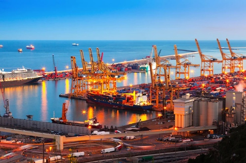

Tips To Help Your Business Run Smoothly With A 3pl Warehouse
The bulk of warehousing today goes toward commerce, the environment in which creative industries thrive. These are established at modernized warehouses that offer much more than basic storage. They are the traditional setup for retailers with high roaming inventories, vendors with their own stock, extremely fluid distribution, and numerous services associated with selling. In some cases, you and another business may be able to create and manage your own warehouse, performing these activities by yourself. Nevertheless, as a growing number of businesses see the value of hiring a 3rd party logistics (3PL) provider to handle these logistics, an increasing number of companies are growing their warehousing resources.
If you need warehouse storage hosting, or if you are trying to find a warehouse that delivers this service, this article will help. We'll delve into all that 3PL warehousing entails, while helping you locate an established 3PL partner that fits your business needs.
Types of 3PL Warehousing
There are three different varieties of storage available for use.
1. The DIY method.Your most expensive option is renting a warehouse to build your own production facility. You then need to hire employees, lease equipment for the operation, purchase a warehouse-management system and buy the technologies it will require. If your actual volume differs from your prediction, you may be stuck with a lot of storage space or to such an extent that you have to acquire more resources to stay afloat.2. The dedicated 3PL model. Pay a 3PL to piggyback on one or more warehouses that will likely be vacant and devoted to your use, or rent the facility(s) yourself and contract with a 3PL to direct your operation. Fortunately, your 3PL will have the staff and equipment needed to deliver the service you need at a fair cost and on its own premises. This kind of warehousing is appropriate for larger companies with many predictable (and large) order volumes.
3. The shared 3PL model. The most common style of modern warehousing is shared warehousing. Shared warehousing is available on a platform 3PLs warehouse to which you, along with fellow tenants, share space. Instead of the large overhead associated with DIY and contract warehousing, you only pay for the space and services you require. Your 3PL can easily scale your footprint across all dimensions, so you can shift your warehouse activity as it grows.
The Warehouse Management System
Instead of the large overhead associated with DIY and contract warehousing, you only pay for the space and services you require. Your 3PL can easily scale your footprint across all dimensions, so you can shift your warehouse activity as it grows.
- Inventory management: The Warehouse Management System (WMS) will be used to determine how to deal with your products based on attributes including warehouse location, quantity on hand, part number, serial number, lot number, and expiration date.
- Order status: As orders are processed, their shipment status and real-time parcel tracking information can be viewed.
- Multi–channel capabilities: The WMS can process inventory and orders for both B2B and B2C at the same time.
- eCommerce pick and pack: The WMS can devise the best picking pattern, which can help employees reduce walking distance and overlap to save time. Employees then observe the packing directions set by the WMS and apply shipping labels (also set by the WMS).
- Label generation: An eCommerce order will initiate the creation and printing of shipping labels, while retailer orders will result in UCC-128 labels and other similar labels that do not conform to a company's specifications.
- Integrations support: The WMS can link up and communicate with other platforms via EDI. These include transportation management systems (TMS); eCommerce platforms such as Amazon, Shopify, and Magento; and carrier portals (e.g., FedEx, USPS, and UPS) for real-time shipping updates.
- Recall capabilities: Warehouse personnel will decide which items must be sequestered in the event of a product recall, and those items will be isolated from others and stored separately.

In conclusion, 3PL warehousing services have many benefits for both manufacturers and retailers. 3PL warehouses can handle a variety of products, from electronics to clothing, toys to food. They also allow manufacturers to consolidate their inventory to 3PL warehouses to eliminate the costs of storing their own inventory. Retailers can also benefit from 3PL warehouses because they allow retailers to save on storage costs and outsourcing. 3PL warehouses also reduce transportation costs by shipping products from the same location to reduce shipping time and costs.